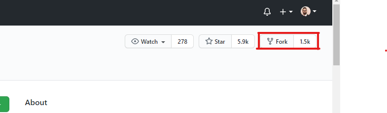
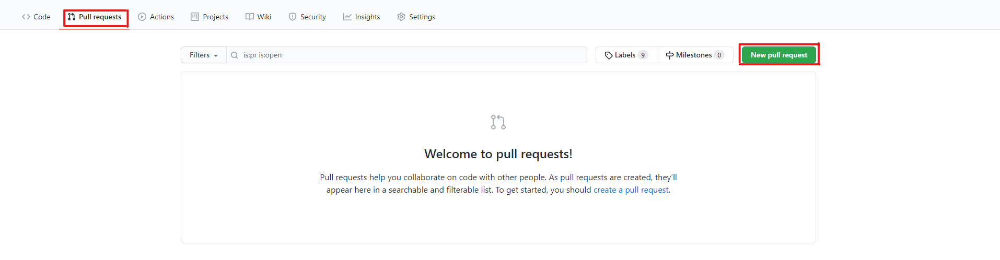
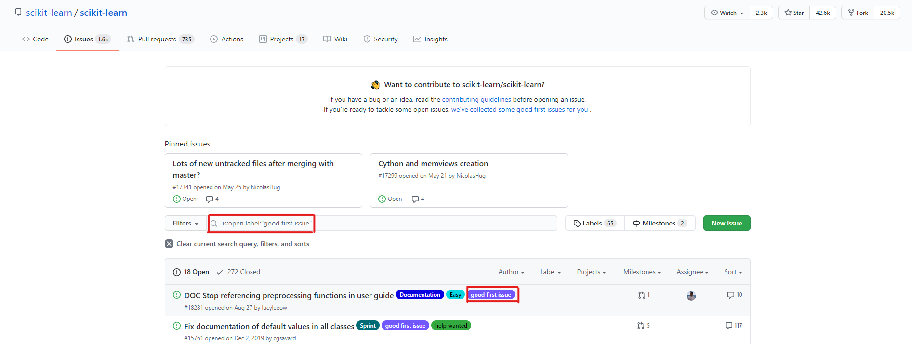

What is Hacktoberfest
Open source projects are a pillar for the data industry, without them projects such as Pandas, Numpy Sci-kit Learn and the entire big data Apache stack would not exist. Hacktoberfest is a month long event where developers can contribute to open source projects on Github and receive free swag. To be eligible to receive the free swag, you must commit four successful Pull Requests on projects that have opted in to Hacktoberfest. To try and easily get the free swag, some contributors submit non meaningful contributions, leading to unhappy project maintainers.
In this post we’ll go through how you can give back to the community and make a meaningful contributions open source projects.
How I got into Open Source
I first got into Open Source when I was working with two projects, interpret and pandas-summary. In both cases the usage of the projects had not completely covered my use cases, albeit they were very minor.
With interpret I was trying to use the library to explain/interpret a Sklearn classifier. The underlying issue is that the .predict method returns an integer (0, 1, etc.) for classifiers. When these integer values were used to calculate the Morris Sensitivity, an error was thrown saying that the data had to be a float. In this case, the fix was simple - cast the integers returned as integers by the Sklearn classifier to a float! Before the fix, anyone who tried to interpret a Sklearn classifier would get an error and this simple contribution allowed all users to interpret Sklearn classification models.
With pandas-summary, I was using this library to automate descriptive and statistical analysis of column data. The only issue was that every time I used the library, a histogram was always plotted, which was a nuisance. As a quality of life fix, I added a simple flag that users could specify if they want to plot the histogram.
My first two contributions were nothing special, and were quite simple, but from these two contributions I learned the basics of how to make a Pull Request to a remote project, follow contribution guidelines as well as interact & communicate with project maintainers via Github, Slack, etc.
From there I went on to be a major contributor of the pandas-bokeh library, contributed bug fixes and UI improvements to Nteract and added major feature integrations to Prefect.
Tips
Learn how to make a Pull Request
A pull request is a method of contributing your code into a project. To start off, find a project you want to contribute to and fork the project by clicking the fork button at the top right corner of the project page. This will create a copy of the project in its current state under your repositories.

Once you have forked the project, navigate to the repository under your Projects in Github. Under the project name it should say forked from ....
Clone the forked project to your local computer.
Create a new branch for you change or bug fix: git checkout -b your_branch_name.
Make your changes, commit them following the Contribution Guidelines of the project.
Push your changes to your forked project repository: git push -u origin your_branch_name.
Navigate to the forked repository project page. You will see a prompt to create a pull request. If you don’t navigate to the pull requests tab and create one from there by selecting New Pull Request.

Fill out the pull request template, if there is one, or one that is outlined in the Contributing guidelines. Once that is completed, your pull request is good to go and wait for feedback!
Start with a library you use often, big or small
The first step towards your first open source contribution is to pick a project you want to contribute to. The best way that I have experienced is to contribute to projects you use often or are actively using. If you have extensively used a project, you have probably come across some across some bugs or enhancements that will improve the quality of the project. This is how I started my journey in Open Source, by trying to improve projects that I was using daily.
Look at existing Github Issues
If you are looking for an issue or way to contribute to a project, a good place to start is Github’s built in Issues tab. This is where users and project maintainers can log bugs and feature enhancements. Project maintainers will go through these issues and tag them, gather more information, add meta data, etc. One of the tags they will add is a “good first issue” tag to inform potential contributors that this issue is good for first time contributors or contributors who are new to the project.

These issues are recommended for contributors who are either new to open source or to the project itself to help them get started and make a contribution. Leverage these if you can’t find your own bug to fix or enhancement to add.
Read the Contribution Guidelines
There is nothing worse than putting in all this work of finding a project, isolating a bug or developing a new feature and to have it rejected or not even looked at because you didn’t follow coding, formatting or commit message standards. The good news is that all of these are available, usually in a Contribution section in the projects README or in the Contributing Guidelines section of the project. Projects will often have automated formatting checks that run when you create a pull request and your pull request won’t often be looked at until these basic checks are passed.
If you don’t see a contribution section or a project doesn’t have Contributing Guidelines, don’t just do whatever you want.
1) Follow the coding & documentation style in the project as close as you can.
2) Follow coding & documentation best practices.
Every Contribution Matters
Every contribution in open source matters regardless how big or small. Whether it’s from a usability perspective or reading the documentation, if you are experiencing a bug or a grievance with a project there are others who are experiencing it as well. Documentation is a large component of open source software as every project needs it. It is often a great place to start contributing to a project as you gain an understanding of what a project is about. It provides background information of design decisions and considerations of the project, which will in turn help you in understand the code.
Documentation is the first place users go to find information and the more thoroughly documented a project is, the more of a user base it will have. Developers love documented projects and when a project doesn’t have documentation, or has poor documentation, a developer will think twice before adding it to their work flow. Adding documentation or fixing even the smallest bug may impact hundreds or even thousands of users who use that project every day and many will thank you for it.
What Happens Next
Very rarely will your contribution get merged right away. Within a couple of days someone from the project team will comment their feedback or notify you that they are reviewing your pull request. Address the comments, ask questions, clarify anything you do not understand, make the proposed changes, if there are any, and your change with get merged shortly after!
If you do not receive any feedback on your pull request within a week, message a project maintainer and politely ask them what the status is. On larger projects there are often tons of pull requests and they may have forgotten about the pull request or have not got around to reviewing it yet.
If at this point you have not received a reply, which does not happen often (has never happened to me), take the skills and learning points from this project and move on to the next project. Once you make the pull request and have messaged the project maintainers, the rest is out of your hands. This is the only real unfortunate part of open source and one you should not take to heart.
Benefits
Become a better Engineer or Scientist
Whether you are a Data Engineer, ML Engineer or Data Scientist contributing to Open Source will help you become better and progress in your field. From understanding how projects are built and structured, gaining deep intricate knowledge of a key library, navigating large code bases, writing production level code or even just learning a new method to solve a problem. All of these skills will translate directly into your profession or your next project.
Meet new Engineers, Developers & Scientists
The greatest benefit of contributing to Open Source is the opportunity to work and interact with the minds who created a tool that is used by thousands of people world wide. You get direct insight into how they they created a solution to solve a widespread problem. Furthermore, you may end up connecting, bounce ideas off one another and collaborate on future projects together. Personally, I’ve connected with project maintainers whose project I have contributed to and have kept in touch with them on Twitter and LinkedIn.
Conclusion
Today you may not be able to contribute a new feature, but being around the project, reading the code, reading the documentation, all of it gives you insight into the project. From there, a small contribution to documentation, might lead to a bug fix that was documented, which leads to a higher understanding of the project, which then leads to your first feature.
The moral of the story is, contribute in any way you can and eventually you will reach that goal of developing the new feature, starting your own OS project and even becoming a key contributor to a project.
Feedback
I encourage any and all feedback about any of my posts. You can message me on twitter or e-mail me at sidhuashton@gmail.com.